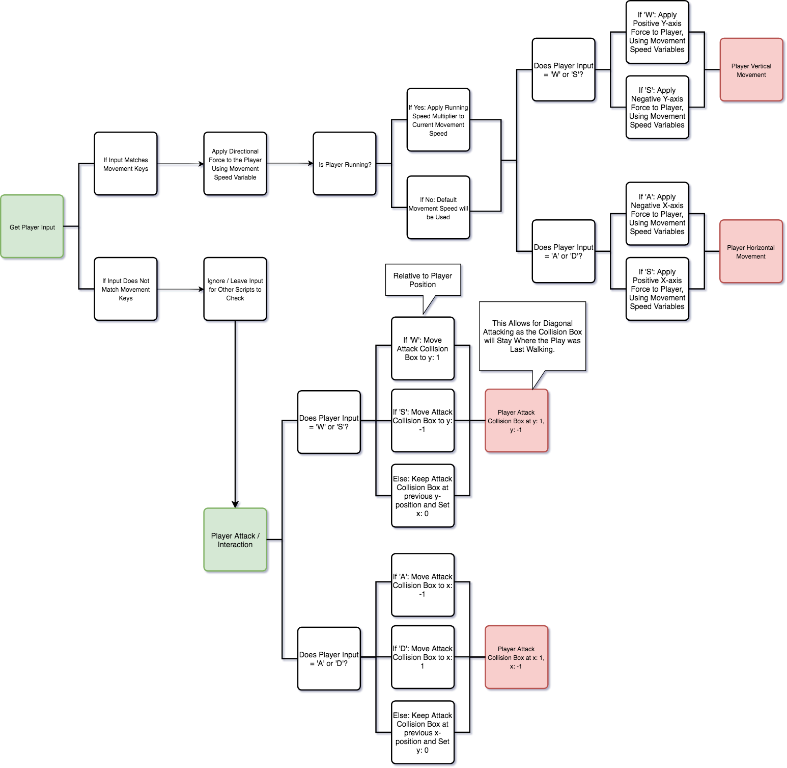
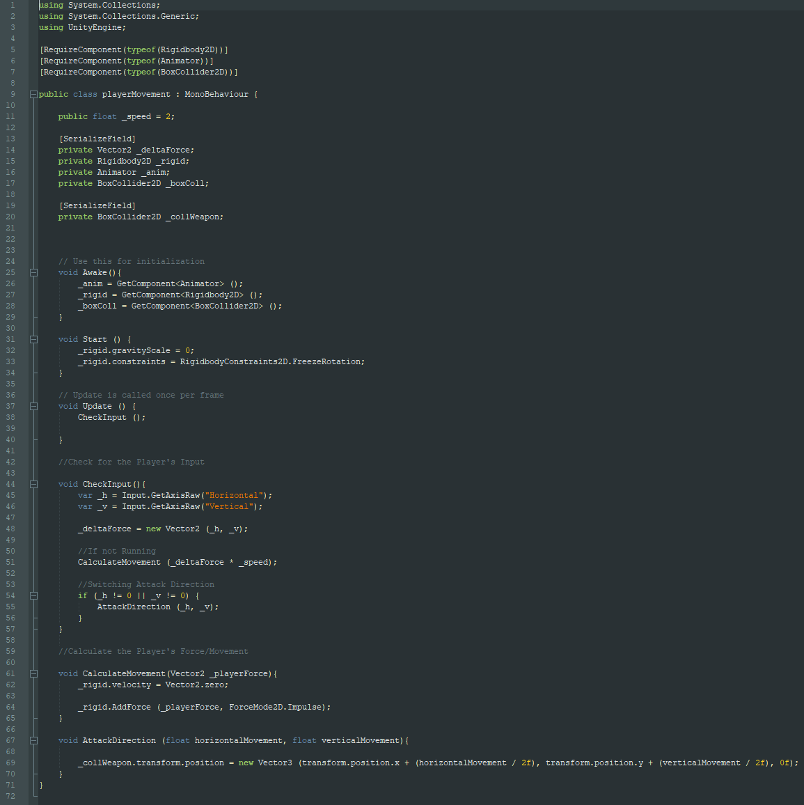

Click to go back
RPG Game - Character Movement
During the development of a test RPG game, the character movement was one of the first programming scripts.
Before developing the script, I always developed flowcharts to better visualize the logic behind the script.
There are two parts of the script. One to handle the movement for the character. And another to handle the hitbox used for attacking.
As the player moves, the attack hitbox will be positioned in the player's direction. So if the player decided to move right, the attack hitbox will position itself at x = 1 and y = 0 relative to the player which is to the right of the player.
An unintended effect that began to appear during the development of the script was the ability to attack in the corners of the character (the top left and right as well as the bottom left and right).
I then decided to build the script around this side-effect by fine tuning the reach of the corners.

The white diamond is a placeholder for the player and the blue interdictory circle is the attack hitbox. I use UI elements as the placeholder as it is faster rather than making custom placeholders.